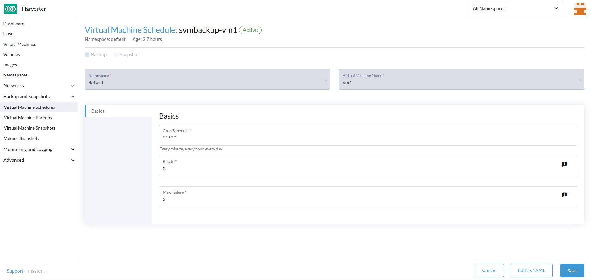

Sauvegarde, instantané et restauration de machine virtuelle
Sauvegarde et restauration de machine virtuelle
Les sauvegardes de machines virtuelles sont créées à partir de la page Machines virtuelles. Les volumes de sauvegarde de machines virtuelles seront stockés dans la Cible de sauvegarde (un serveur NFS ou S3), et ils peuvent être utilisés pour restaurer une nouvelle machine virtuelle ou remplacer une machine virtuelle existante.

|
Une cible de sauvegarde doit être configurée. Pour plus d’informations, reportez-vous au [Configure Backup Target]. Si aucune cible de sauvegarde n’est définie, un message vous invite à en configurer une. Le support de sauvegarde est actuellement limité à SUSE Storage volumes. SUSE Virtualization ne peut pas créer de sauvegardes de volumes dans un stockage externe. |
Configurer la Cible de sauvegarde
Une cible de sauvegarde est un point d’accès utilisé pour accéder à un stockage de sauvegarde dans SUSE Virtualization. Un stockage de sauvegarde est un serveur NFS ou un serveur compatible S3 qui stocke les sauvegardes des volumes de machines virtuelles. La cible de sauvegarde peut être définie à Settings > backup-target.
Le tableau suivant décrit les paramètres communs à toutes les cibles de sauvegarde.
| Paramètre | Type | Description |
|---|---|---|
|
chaîne |
Type de serveur qui stocke les sauvegardes des volumes utilisés par les machines virtuelles. Vous pouvez sélectionner soit |
|
integer |
Nombre de secondes que SUSE Virtualization attend avant de synchroniser les sauvegardes avec le stockage de sauvegarde. Lorsque la valeur est |
-
S3
-
NFS
| Paramètre | Type | Description |
|---|---|---|
|
chaîne |
(Optionnel) Nom d’hôte ou adresse IP du point d’accès utilisé pour accéder au serveur S3 |
|
chaîne |
Nom du bucket S3 |
|
chaîne |
Région AWS dans laquelle le bucket S3 a été créé |
|
chaîne |
Première partie de la clé d’accès que vous utilisez pour authentifier les demandes aux services AWS (par exemple, |
|
chaîne |
Deuxième partie de la clé d’accès que vous utilisez pour authentifier les demandes aux services AWS (par exemple, |
Certificat |
chaîne |
Certificat SSL auto-signé du serveur S3 |
VirtualHostedStyle |
boolean |
Option d’utiliser des URL de style hébergé virtuel, où le nom du bucket fait partie du nom de domaine dans l’URL ( |
| Paramètre | Type | Description |
|---|---|---|
Noeud d’extrémité |
chaîne |
URL du serveur NFS |
Créer une sauvegarde de machine virtuelle
-
Une fois la cible de sauvegarde définie, allez à la page
Virtual Machines. -
Cliquez sur
Take Backupdes actions de la machine virtuelle pour créer une nouvelle sauvegarde de machine virtuelle. -
Définissez un nom de sauvegarde personnalisé et cliquez sur
Createpour créer une nouvelle sauvegarde de machine virtuelle.
Résultat : La sauvegarde est créée. Vous recevrez un message de notification, et vous pouvez également aller à la page Backup & Snapshot > VM Backups pour voir toutes les sauvegardes de machines virtuelles.
Le State sera défini sur Ready une fois la sauvegarde terminée.

Les utilisateurs peuvent soit restaurer une nouvelle machine virtuelle, soit remplacer une machine virtuelle existante en utilisant cette sauvegarde.
|
La configuration réseau d’une machine virtuelle exécutant une version d’Ubuntu ultérieure à 16.04 est probablement gérée par La machine virtuelle restaurée conserve l’ID de la machine virtuelle d’origine. Si |
|
À partir de la version v1.7.0, SUSE Virtualization prend en charge les sauvegardes et les instantanés pour les volumes Longhorn V2 Data Engine. Cependant, la suppression de la dernière sauvegarde d’une machine virtuelle ou l’activation du paramètre SUSE Storage Nettoyage automatique de l’instantané lors de la suppression de la sauvegarde bloque toutes les opérations ultérieures sur les volumes associés. C’est un problème connu qui affecte des opérations telles que les instantanés de volume, les sauvegardes et la migration en direct. Aucun contournement viable n’est actuellement disponible. La résolution de l’état bloqué nécessite la suppression du volume affecté pour restaurer la fonctionnalité de Longhorn Manager. |
Restaurer une nouvelle machine virtuelle à l’aide d’une sauvegarde
-
Accédez à la page
VM Backups. -
Cliquez sur le bouton
Restore Backupen haut à droite. -
Spécifiez le nouveau nom de la machine virtuelle et cliquez sur
Create. -
Une nouvelle machine virtuelle sera restaurée à l’aide des volumes de sauvegarde et des métadonnées, et vous pourrez y accéder depuis la page
Virtual Machines.
Remplacer une machine virtuelle existante à l’aide d’une sauvegarde
Vous pouvez remplacer une machine virtuelle existante à l’aide de la sauvegarde avec la même cible de sauvegarde de machine virtuelle.
Vous pouvez choisir de supprimer ou de conserver les volumes précédents. Par défaut, tous les volumes précédents sont supprimés.
Configuration requise : La machine virtuelle doit exister et doit être arrêtée.
-
Accédez à la page
VM Backups. -
Cliquez sur le bouton
Restore Backupen haut à droite. -
Cliquez sur
Replace Existing. -
Vous pouvez voir le processus de restauration depuis la page
Virtual Machines.
Restaurer une nouvelle machine virtuelle sur un autre cluster SUSE Virtualization
Les utilisateurs peuvent désormais restaurer une nouvelle machine virtuelle sur un autre cluster en utilisant la fonctionnalité de sauvegarde des métadonnées et du contenu de la machine virtuelle.
Conditions préalables
-
v1.4.0 et version ultérieure: Le contrôleur synchronise automatiquement les images de machine virtuelle avec le nouveau cluster, sauf lorsqu’une image de machine virtuelle avec le même nom ou nom d’affichage existe déjà sur le nouveau cluster.
-
Antérieure à v1.4.0: Vous devez télécharger et configurer les images de machine virtuelle sur le nouveau cluster. Assurez-vous que les noms des images et la configuration sont identiques afin que les machines virtuelles puissent être restaurées.
Téléchargez les mêmes images de machines virtuelles dans un nouveau cluster.
-
Téléchargez l’image de la machine virtuelle depuis le cluster existant.

-
Décompressez l’image téléchargée.
$ gzip -d <image.gz>
-
Hébergez l’image sur un serveur accessible au nouveau cluster.
Exemple (serveur HTTP simple) :
$ python -m http.server
-
Vérifiez le nom de l’image existante (commence normalement par
image-) et créez le même sur le nouveau cluster.$ kubectl get vmimages -A NAMESPACE NAME DISPLAY-NAME SIZE AGE default image-79hdq focal-server-cloudimg-amd64.img 566886400 5h36m default image-l7924 harvester-v1.0.0-rc2-amd64.iso 3964551168 137m default image-lvqxn opensuse-leap-15.3.x86_64-nocloud.qcow2 568524800 5h35m -
Appliquez un fichier YAML
VirtualMachineImageavec le même nom et la même configuration dans le nouveau cluster.Exemple :
$ cat <<EOF | kubectl apply -f - apiVersion: harvesterhci.io/v1beta1 kind: VirtualMachineImage metadata: name: image-79hdq namespace: default spec: displayName: focal-server-cloudimg-amd64.img pvcName: "" pvcNamespace: "" sourceType: download url: https://<server-ip-to-host-image>:8000/<image-name> EOF
SUSE Virtualization peut restaurer des machines virtuelles uniquement si le nom de l’image et la configuration des anciens et nouveaux clusters sont identiques.
Restaurez une nouvelle machine virtuelle dans un nouveau cluster.
-
Configurez la même cible de sauvegarde dans un nouveau cluster. Et le contrôleur de sauvegarde synchronisera automatiquement les métadonnées de sauvegarde vers le nouveau cluster.
-
Accédez à la page
VM Backups. -
Sélectionnez les métadonnées de sauvegarde de la machine virtuelle synchronisée et choisissez de restaurer une nouvelle machine virtuelle avec un nom de machine virtuelle spécifié.
-
Une nouvelle machine virtuelle sera restaurée en utilisant les volumes de sauvegarde et les métadonnées. Vous pouvez y accéder depuis la page
Virtual Machines.
Instantané et restauration de machine virtuelle
Les instantanés de machines virtuelles sont créés depuis la page Machines virtuelles. Les volumes d’instantanés de la machine virtuelle seront stockés dans le cluster, et ils peuvent être utilisés pour restaurer une nouvelle machine virtuelle ou remplacer une machine virtuelle existante.

Créez un instantané de machine virtuelle.
-
Accédez à la page
Virtual Machines. -
Cliquez sur
Take VM Snapshotdes actions de la VM pour créer un nouvel instantané de machine virtuelle. -
Définissez un nom d’instantané personnalisé et cliquez sur
Createpour créer un nouvel instantané de machine virtuelle.
Résultat : L’instantané est créé. Vous pouvez également aller à la page Backup & Snapshot > virtual machine Snapshots pour voir tous les instantanés de VM.
Le State sera défini sur Ready une fois l’instantané terminé.

Les utilisateurs peuvent soit restaurer une nouvelle machine virtuelle, soit remplacer une machine virtuelle existante en utilisant cet instantané.
|
La configuration réseau d’une machine virtuelle exécutant une version d’Ubuntu ultérieure à 16.04 est probablement gérée par La machine virtuelle restaurée conserve l’ID de la machine virtuelle d’origine. Si |
|
À partir de la version v1.7.0, SUSE Virtualization prend en charge les sauvegardes et les instantanés pour les volumes Longhorn V2 Data Engine. Cependant, la suppression de la dernière sauvegarde d’une machine virtuelle bloque toutes les opérations ultérieures sur les volumes associés. C’est un problème connu qui affecte des opérations telles que les instantanés de volume, les sauvegardes et la migration en direct. Aucun contournement viable n’est actuellement disponible. La résolution de l’état bloqué nécessite la suppression du volume affecté pour restaurer la fonctionnalité du Longhorn Manager. |
Restaurer une nouvelle machine virtuelle en utilisant un instantané
-
Accédez à la
VM Snapshotspage. -
Cliquez sur le
Restore Snapshotbouton en haut à droite. -
Spécifiez le nouveau nom de la machine virtuelle et cliquez sur
Create. -
Une nouvelle machine virtuelle sera restaurée en utilisant les volumes et les métadonnées de l’instantané, et vous pourrez y accéder depuis la
Virtual Machinespage.
Remplacer une machine virtuelle existante en utilisant un instantané
Vous pouvez remplacer une machine virtuelle existante en utilisant l’instantané.
|
Vous ne pouvez choisir que de conserver les volumes précédents. |
-
Accédez à la
VM Snapshotspage. -
Cliquez sur le
Restore Snapshotbouton en haut à droite. -
Cliquez sur
Replace Existing. -
Vous pouvez voir le processus de restauration depuis la
Virtual Machinespage.
Gestion de l’espace des instantanés de machines virtuelles
Les volumes consomment de l’espace disque supplémentaire dans le cluster chaque fois que vous créez une nouvelle sauvegarde ou un instantané de machine virtuelle. Pour gérer cela, vous pouvez configurer des limites d’utilisation de l’espace au niveau de l’espace de noms et de la machine virtuelle. Les valeurs configurées représentent la quantité maximale d’espace disque qui peut être utilisée par toutes les sauvegardes et instantanés. Aucune limite n’est définie par défaut.
Configurer la limite d’utilisation de l’espace des instantanés au niveau de l’espace de noms
-
Allez à l’écran Espaces de noms.
-
Localisez l’espace de noms cible, puis sélectionnez ⋮ → Modifier le quota.

-
Spécifiez la quantité maximale d’espace disque pouvant être consommée par tous les instantanés dans l’espace de noms, puis cliquez sur Enregistrer.

-
Vérifiez que la valeur configurée est affichée sur l’écran Espaces de noms.

Configurez la limite d’utilisation de l’espace des instantanés au niveau de la machine virtuelle
-
Allez à l’écran Machines virtuelles.
-
Localisez la machine virtuelle cible, puis sélectionnez ⋮ → Modifier le quota de la VM.

-
Spécifiez la quantité totale maximale d’espace disque pouvant être consommée par tous les instantanés pour la machine virtuelle, puis cliquez sur Enregistrer.

-
Vérifiez que la valeur configurée est affichée dans l’onglet Quotas de l’écran des détails de la machine virtuelle.

Gel du système de fichiers pour les sauvegardes et les instantanés de machines virtuelles
Lorsqu’une machine virtuelle invitée est connectée avec le QEMU Guest Agent, le SUSE Virtualization contrôleur effectue des opérations de gel du système de fichiers via l’application virt-freezer de Kubevirt pour garantir la cohérence du système de fichiers lors des sauvegardes et des instantanés de machines virtuelles.
Cette fonctionnalité est particulièrement précieuse pour les machines virtuelles avec une activité E/S élevée ou des données critiques nécessitant des garanties de cohérence à un instant donné.
Conditions préalables
La fonctionnalité de gel et de dégel du système de fichiers dépend de la configuration de la machine virtuelle, qui n’est pas contrôlée par SUSE Virtualization. Vous devez vous assurer que les machines virtuelles sont configurées correctement et prennent en charge les commandes libvirt requises.
-
Red Hat Enterprise Linux (RHEL) et SUSE Linux Enterprise (SLE) Micro : Ces systèmes peuvent par défaut manquer de permissions suffisantes pour les opérations de gel du système de fichiers. Vous pourriez être amené à créer des politiques SELinux personnalisées.
-
Windows : Les opérations de gel du système de fichiers ne sont disponibles sur ces systèmes que lorsque le service Volume Shadow Copy Service (VSS) est activé.
|
Lorsque l’application virt-freezer est déclenchée, KubeVirt communique avec le QEMU Guest Agent pour traduire les appels spécifiques au système d’exploitation. Les systèmes Linux utilisent des appels système fsfreeze, tandis que les systèmes Windows utilisent des API VSS. |
Vérification de la compatibilité du gel du système de fichiers
Pour vérifier que votre machine virtuelle prend en charge les opérations de gel du système de fichiers, effectuez les étapes suivantes :
-
Accédez au conteneur virt-launcher
computede la machine virtuelle.POD=$(kubectl get pods -n default \ -l vm.kubevirt.io/name=vm1 \ -o jsonpath='{.items[0].metadata.name}') kubectl exec -it $POD -n default -c compute -- bash -
Essayez de geler le système de fichiers en utilisant l’application virt-freezer, qui est disponible dans le
computeconteneur:virt-freezer --freeze --namespace <VM namespace> --name <VM name> -
Vérifiez le résultat de l’opération de gel.
Ne sautez pas cette étape. De plus, vous devez dégeler les systèmes de fichiers de la machine virtuelle avant d’effectuer d’autres opérations.
Dépannage des problèmes de gel du système de fichiers
Erreur de gel du système de fichiers en raison de permissions insuffisantes
Une Failed to freeze filesystem erreur peut provoquer des échecs de sauvegarde ou d’instantanés sur certaines distributions Linux.
Ce problème se produit généralement lorsque SELinux refuse l’accès en lecture à l’agent invité QEMU (qemu-ga). Vous pouvez vérifier la cause en utilisant les étapes suivantes :
-
[Vérifiez que votre machine virtuelle prend en charge les opérations de gel du système de fichiers](#verifying-filesystem-freeze-compatibility).
-
Vérifiez les
Permission deniederreurs de SELinux dans les journaux système.Si vous voyez un message similaire à celui-ci, SELinux bloque l’accès requis :
{"component":"freezer","level":"error","msg":"Freezing VMI failed","reason":"server error. command Freeze failed: \"LibvirtError(Code=1, Domain=10, Message='internal error: unable to execute QEMU agent command 'guest-fsfreeze-freeze': failed to open /data: Permission denied')\""}
Pour résoudre le problème, vous devez créer et installer un module de stratégie SELinux personnalisé. Cette solution a été vérifiée pour fonctionner avec RHEL et SLE Micro.
|
Utiliser |
-
Générez un module de stratégie SELinux personnalisé à partir des journaux d’audit.
grep qemu-ga /var/log/audit/audit.log | audit2allow -M my_qemu_ga -
Installez le module de stratégie généré.
semodule -i my_qemu_ga.pp -
Répétez les étapes 1 et 2 jusqu’à ce que virt-freezer puisse réussir à geler les systèmes de fichiers.
Vous devez dégeler les systèmes de fichiers des machines virtuelles avant d’effectuer d’autres opérations.
virt-freezer --unfreeze --namespace <VM namespace> --name <VM name>
Sauvegardes et instantanés de machines virtuelles programmés
SUSE Virtualization prend en charge la création de sauvegardes et d’instantanés de machines virtuelles sur une base programmée, avec l’option de conserver un nombre spécifique de sauvegardes et d’instantanés. Vous pouvez suspendre, reprendre et mettre à jour la planification pendant l’exécution.
Créer le planning de machine virtuelle
-
Allez à l’écran Plannings de machines virtuelles, puis cliquez sur Créer un planning.

-
Configurez les paramètres suivants :

-
Type : Sélectionnez soit Sauvegarde soit Instantané.
-
Espace de noms et Nom de la machine virtuelle : Spécifiez l’espace de noms et le nom de la machine virtuelle source.
-
Planning Cron : Spécifiez l’expression cron (une chaîne composée de champs séparés par des espaces blancs) qui définit les propriétés de planification.
L’intervalle de création de sauvegarde ou d’instantané doit être de au moins une heure. La suppression fréquente de sauvegardes ou d’instantanés entraîne une charge E/S importante.
Si deux plannings ont le même niveau de granularité, le décalage horaire de chaque itération doit être de au moins 10 minutes.
-
Conserver : Spécifiez le nombre de sauvegardes ou d’instantanés à jour à conserver.
Lorsque cette valeur est dépassée, le SUSE Virtualization contrôleur supprime les sauvegardes ou les instantanés les plus anciens, et Longhorn commence la purge des instantanés.
-
Échec maximal : Spécifiez le nombre maximum de tentatives consécutives de création de sauvegarde ou d’instantané échouées autorisées.
Lorsque cette valeur est dépassée, le SUSE Virtualization contrôleur suspend le planning.
-
-
Cliquez sur Create.
Vérifiez l’état d’un planning de machine virtuelle
-
Allez à l’écran Plannings de machines virtuelles.
-
Localisez le planning cible, puis cliquez sur le nom pour ouvrir l’écran des détails.
-
Dans l’onglet Informations générales, vérifiez que les paramètres sont corrects.

-
Dans l’onglet Sauvegardes, vérifiez l’état des sauvegardes ou des instantanés qui ont été créés selon le planning.

Les sauvegardes et les instantanés marqués Prêt peuvent être utilisés pour restaurer la machine virtuelle source. Pour plus d’informations, reportez-vous aux sections [Virtual Machine Backup & Restore] et [Virtual Machine Snapshot & Restore].

Modifier un planning de machine virtuelle
-
Allez à l’écran Plannings de machines virtuelles.
-
Localisez le planning cible, puis sélectionnez ⋮ → Modifier la configuration.

-
Modifiez les valeurs de Planning Cron, Conserver ou Échec maximal.

-
Cliquez sur Enregistrer pour appliquer les modifications.
Suspendre ou reprendre un planning de machine virtuelle
Vous pouvez suspendre les plannings actifs et reprendre les plannings suspendus.
-
Allez à l’écran Plannings de machines virtuelles.
-
Localisez le planning cible, puis sélectionnez ⋮ → Suspendre ou Reprendre.

Le planning est automatiquement suspendu lorsque le nombre d’échecs consécutifs de création de sauvegarde ou d’instantané dépasse la valeur Échec maximal.
SUSE Virtualization ne vous permet pas de reprendre un planning suspendu pour la création de sauvegarde si la cible de sauvegarde n’est pas accessible.
|
Si un planning a été automatiquement suspendu parce que la valeur Échec maximal a été dépassée, vous devez explicitement reprendre ce planning après avoir vérifié que la sauvegarde ou l’instantané peut être créé avec succès. Par exemple, lorsque la cible de sauvegarde devient à nouveau accessible après une période de déconnexion, vous pouvez d’abord créer une sauvegarde manuellement et vérifier le résultat. |
Opérations de machine virtuelle et SUSE Virtualization Mises à niveau
Avant de mettre à niveau SUSE Virtualization, assurez-vous qu’aucune sauvegarde ou instantané de machine virtuelle n’est en cours d’utilisation, et que tous les plannings de machines virtuelles sont suspendus. L’interface SUSE Virtualization affiche les messages d’erreur suivants lorsque les tentatives de mise à niveau sont rejetées :
-
Des sauvegardes ou des instantanés de machines virtuelles sont en cours de création, de suppression ou d’utilisation pendant la tentative de mise à niveau.

-
Des plannings de machines virtuelles sont actifs pendant la tentative de mise à niveau.

Pour éviter de tels problèmes, SUSE prévoit de mettre en œuvre la suspension automatique de tous les plannings de machines virtuelles avant le début du processus de mise à niveau. Les plannings suspendus seront également automatiquement repris après la fin de la mise à niveau. Pour plus d’informations, voir Problème #6759.
|
SUSE Storage dispose d’une fonctionnalité similaire appelée instantanés et sauvegardes récurrents, qui utilise des tâches récurrentes pour créer des instantanés ou des sauvegardes périodiques des volumes SUSE Storage. Cette fonctionnalité n’est pas intégrée dans SUSE Virtualization car elle entre en conflit avec certaines opérations (par exemple, l’attachement de machines virtuelles et les mises à niveau de clusters). Les tâches d’instantanés et de sauvegardes récurrents SUSE Storage peuvent également générer des E/S lourdes sans que SUSE Virtualization en soit conscient, et dans certains cas, même déstabiliser le cluster. Pour de meilleurs résultats, utilisez la fonctionnalité sauvegardes et instantanés de machines virtuelles planifiés dans SUSE Virtualization, qui dispose de mécanismes de protection qui atténuent les E/S lourdes lorsque cela est possible. Encore une fois, SUSE Virtualization ne prend pas en charge les instantanés et sauvegardes récurrents SUSE Storage. |